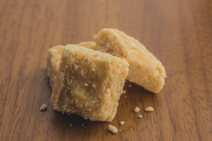

Cocadinha de Leite Condensado
Ingredientes
- 500 gramas de coco fresco ralado
- 1 lata de leite condensado
- 300 gramas de áçucar
- 1 colher de sopa de manteiga
Modo de Preparo
- Em uma panela coloque o coco fresco ralado, o leite condensado, o açúcar e a manteiga. Misture e cozinhe até soltar do Fundo da panela.
- Despeje a mistura em uma forma untada com manteiga ou margarina e espere esfriar.
- Desenforme, corte em pedaços e é só servir!